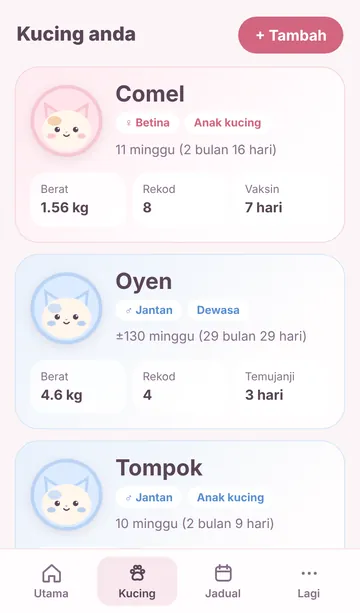
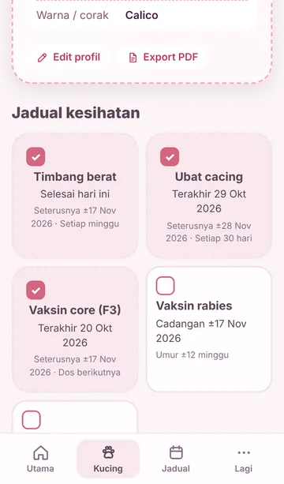

Profil setiap kucing
Gambar, jantina, baka, warna dan no. microchip. Tema pink untuk betina, biru untuk jantan.
Profil, berat, vaksin, ubat cacing dan lawatan vet untuk setiap kucing anda. Kucingku kira sendiri bila rawatan seterusnya, jadi anda tak perlu ingat.
Kucingku dibuat untuk telefon. Buka link di iPhone atau Android, kemudian pasang ke skrin utama.
Buka, kemudian pasang ke skrin utama. Percuma, tanpa daftar akaun.
Ciri
Dibina oleh pemilik kucing, untuk pemilik kucing di Malaysia.
Gambar, jantina, baka, warna dan no. microchip. Tema pink untuk betina, biru untuk jantan.
Umur dikira dalam minggu dan bulan, dengan fasa semasa seperti anak kucing atau remaja, serta petua jagaan.
Tarikh rawatan seterusnya dikira sendiri daripada tarikh lahir dan rekod terakhir.
Senarai semak apa yang perlu dibuat hari ini, dan temujanji vet seterusnya dengan butang telefon.
Timbang semua kucing sekali gus dan lihat graf pertumbuhan. Gram atau kg, ikut pilihan anda.
Sejarah penuh kucing dalam satu PDF yang cantik. Tunjuk terus kepada doktor haiwan semasa lawatan.
Juga: rekod perbelanjaan, simpan klinik vet, export ke kalendar telefon, dan 5 pilihan tema warna.
Contoh paparan


Cara mula
Tak perlu App Store atau Play Store. Kucingku dipasang terus dari pelayar telefon.
Imbas kod QR dengan kamera telefon, atau buka link Kucingku yang dihantar ke WhatsApp anda.
App akan tunjuk langkah demi langkah.
Buka Kucingku dari ikon di skrin utama, isi nama dan tarikh lahir. Jadual rawatan terus dikira.
Buka dari Facebook, TikTok atau Threads? Kucingku akan minta anda buka dalam Chrome atau Safari dahulu, supaya app boleh dipasang.
Tiada akaun, tiada pelayan yang simpan rekod anda. Kami sendiri tak boleh lihat data kucing anda.
Soalan lazim
Ya. Kucingku percuma sepenuhnya, tiada iklan dan tiada langganan.
Supaya Kucingku dibuka seperti app biasa dan rekod anda disimpan dengan selamat dalam app itu. Kalau dibuka dalam pelayar sahaja, data boleh hilang bila sejarah pelayar dibersihkan.
Buat masa ini Kucingku dibuat untuk telefon sahaja (iPhone dan Android). Di komputer, imbas kod QR untuk buka di telefon.
Buka Setting → Data → Backup dan export fail backup. Hantar fail itu ke telefon baharu (contohnya melalui WhatsApp atau Google Drive), kemudian pasang Kucingku dan import fail tersebut.
Ya. Data hanya ada dalam telefon anda, jadi padam ikon app akan padam semua rekod. Sebab itu Kucingku akan ingatkan anda buat backup secara berkala.
Boleh. Selepas dipasang, Kucingku boleh dibuka dan digunakan walaupun tiada internet.
Tidak. Jadual dan petua dalam Kucingku ialah panduan umum. Sahkan sentiasa dengan doktor haiwan anda.
Terima kasih! Hantar melalui borang maklum balas, atau dalam app: Lagi → Setting → Tentang.
Imbas kod QR dengan kamera telefon. Percuma, tanpa daftar akaun.
Percuma, tanpa daftar akaun.
Buka Kucingku